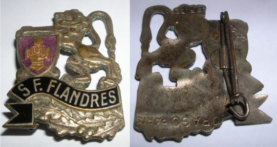

Le Secteur Fortifié des Flandres (SFFL) représente une zone relativement modeste et tardivement aménagée. Situé entre la mer du Nord et la région d’Armentières, ce secteur avait pour mission de protéger l’extrême nord du territoire français face à une éventuelle offensive allemande passant par la Belgique.
Le SFFL se caractérise principalement par des fortifications légères. La majorité des ouvrages construits sont des blockhaus MOM (Main-d’Œuvre Militaire), de dimensions réduites, destinés à assurer des missions de surveillance et de défense locale. Quelques ouvrages plus importants de type STG furent néanmoins édifiés dans des points stratégiques comme le Mont Noir ou les abords de Cassel. Cette faiblesse relative des fortifications s’explique par la perception stratégique de l’époque : le nord de la France était considéré comme moins menacé que les régions frontalières de l’Est.
Le relief des Flandres joue cependant un rôle militaire essentiel. La plaine côtière située entre Dunkerque et la frontière belge, très marécageuse, se prête facilement à l’organisation d’inondations défensives capables de ralentir une progression ennemie. Plus au sud, plusieurs hauteurs naturelles comme le Mont Noir, le Mont des Cats ou encore le Mont Cassel forment une ligne d’appui importante permettant de contrôler les axes de circulation entre la côte et l’intérieur des terres.
En temps de paix, le secteur dépend de la 1re Région Militaire couvrant le Nord et le Pas-de-Calais. Le commandement du secteur est confié en 1939 au général Rapenne, remplacé quelques mois plus tard par le général Barthélemy. Plusieurs régiments régionaux de travailleurs et d’infanterie assurent alors la défense du secteur, soutenus par l’artillerie, le génie militaire ainsi que des compagnies de travailleurs français et espagnols mobilisés pour accélérer les constructions défensives.
L’histoire du SFFL remonte aux réflexions stratégiques menées dès les années 1920. Les premiers projets de fortification prévoyaient une ligne plus au sud, passant par Valenciennes et Saint-Omer. Toutefois, lors d’une reconnaissance effectuée en 1927, le maréchal Philippe Pétain critique ce tracé et insiste sur l’importance stratégique des hauteurs flamandes, notamment Cassel. Ses recommandations influencent fortement les projets ultérieurs.
En 1930, la CORF (Commission d’Organisation des Régions Fortifiées) étudie un programme de fortification limité mais prioritaire autour des forêts de Raismes, de Mormal et du secteur de Cassel. Un ambitieux projet de dix casemates modernes est même envisagé pour protéger le Mont Cassel, mais les contraintes budgétaires empêchent finalement sa réalisation.
Les véritables travaux commencent surtout à partir de 1937 et s’intensifient considérablement entre 1939 et mai 1940. Environ 180 blockhaus légers sont construits le long de la frontière franco-belge. Certains points stratégiques, comme Hondschoote ou le Mont Noir, reçoivent des casemates plus puissantes de type STG ou FCR. À la fin de l’année 1939, sous l’impulsion de la CEZF (Commission d’Études des Zones Fortifiées), une ligne de grands blockhaus doubles STG est édifiée devant Cassel afin de renforcer la défense intérieure du secteur.
Au déclenchement de la Seconde Guerre mondiale, le secteur passe sous l’autorité de la 1re Armée puis, à partir de novembre 1939, sous le contrôle de la 7e Armée française dans le cadre de la réorganisation du front décidée par le général Gamelin. En janvier 1940, le Secteur Défensif devient officiellement le Secteur Fortifié des Flandres.
Lorsque l’offensive allemande débute le 10 mai 1940, la 7e Armée quitte rapidement la région pour appliquer la manœuvre Dyle-Breda en Belgique. Le SFFL se retrouve alors relativement isolé. Après les percées allemandes sur la Meuse et à Sedan, l’encerclement progressif des armées alliées dans le nord devient inévitable. Entre le 26 et le 28 mai 1940, les forces allemandes progressent vers Dunkerque après la prise de Lille. Les unités du SFFL participent alors à des combats de retardement particulièrement difficiles afin de permettre l’évacuation des troupes alliées vers l’Angleterre. Les combats se déroulent principalement au niveau de Bray-dunes et des moeres. Des combats sont aussi menés au mont noir et près de Cassel.
Ces combats s’inscrivent dans le cadre de la célèbre Bataille de Dunkerque, qui voit l’évacuation de centaines de milliers de soldats britanniques et français. Le 4 juin 1940, la bataille prend fin et marque également la disparition du Secteur Fortifié des Flandres, englouti dans l’effondrement général du front nord français.

Insigne du secteur. Source : la-ligne-maginot.com